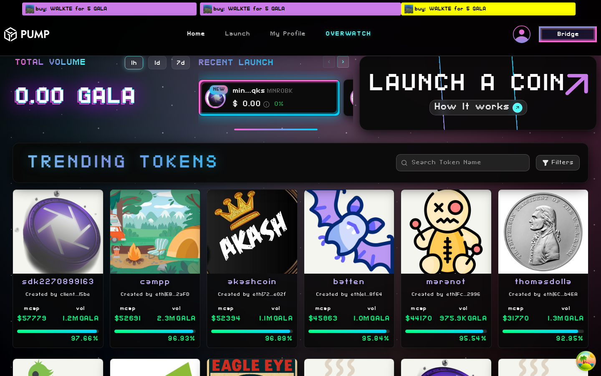

Home / Token Grid
Public Pages/
The main landing page of Gala Launchpad featuring a hero banner with total volume statistics, a recent launch carousel, and a trending tokens grid. Serves as the primary discovery surface for token launches with real-time trade notifications in a top ticker bar.
UI Patterns: Card grid layout with responsive columns, Horizontal carousel for recent launches, Real-time ticker/marquee for trade notifications, Hero section with stats and CTA
Navigation: Direct entry point - root URL. Users land here from external links or after login.
Key Features (6)
- Hero banner with TOTAL VOLUME stats and 1h/1d/7d toggle controls
- RECENT LAUNCH horizontal carousel showcasing newest tokens
- LAUNCH A COIN prominent call-to-action button
- TRENDING TOKENS grid with token cards showing image, name, creator, mcap, volume, and bonding curve progress bar
- Live trade ticker bar at top with real-time buy/sell notifications
- Navigation bar: Home, Launch, My Profile, OVERWATCH, Bridge button, user avatar
Interactive Elements (7)
- 1h/1d/7d volume toggle buttons
- LAUNCH A COIN CTA button
- Token cards (clickable to detail page)
- Recent launch carousel scroll controls
- Navigation bar links
- Bridge button
- User avatar/profile menu
Testing Observations (1)
- Verify volume stats update on toggle, token cards render with correct data, ticker bar scrolls with live trades, carousel navigation works, and all nav links route correctly.
Notes: Primary discovery page. Token cards include bonding curve progress bars indicating how close each token is to DEX graduation.